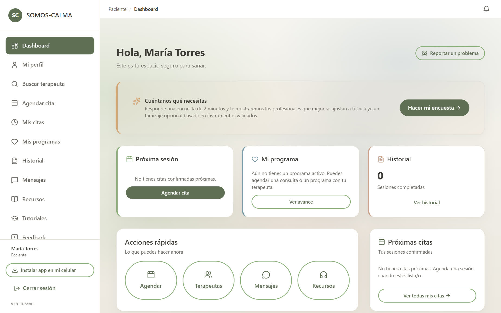
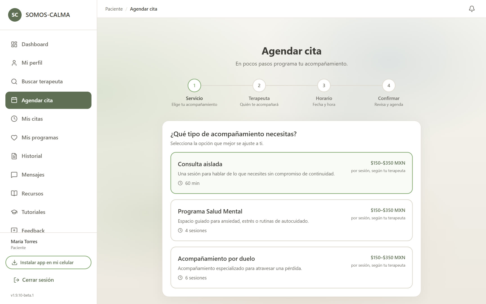
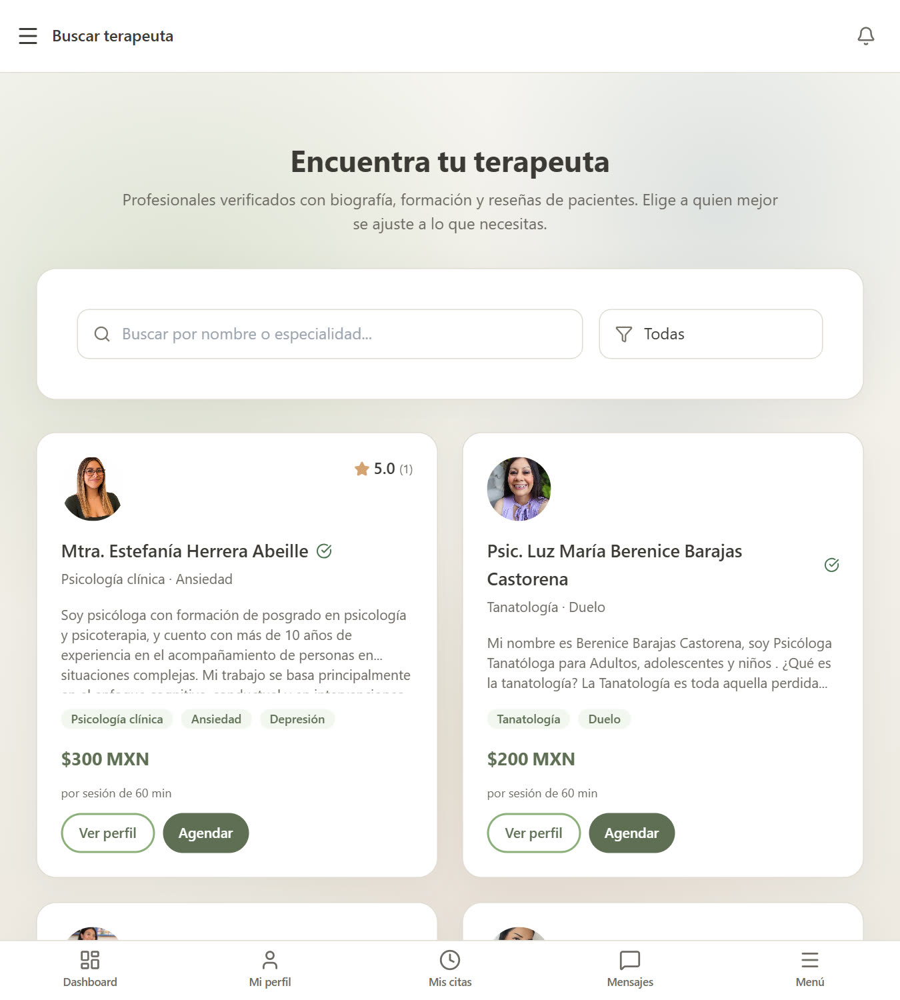
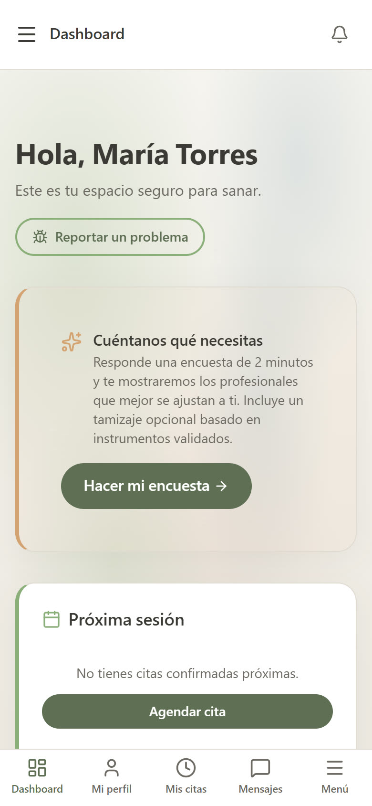

🌿
Consulta aislada
Una sola sesión de 60 minutos cuando sientes que el día pesa demasiado. Sin compromiso, sin contratos.
Estamos en Beta
Consulta aislada para lo urgente, o un programa guiado de 4 o 6 sesiones para cuidar tu salud mental o acompañarte en una pérdida.
Nuestra fundadora y tanatóloga te cuenta, en menos de un minuto, cómo es el acompañamiento en Somos Calma y qué puedes esperar de tu primera sesión.
Comenzar mi acompañamientoCapturas reales de la plataforma: tu panel, el directorio de profesionales verificados y el agendamiento en pocos pasos.

Tu panel: próxima sesión, programa e historial en un vistazo

Agenda en 4 pasos: elige tu acompañamiento, terapeuta y horario

El directorio en tu celular, con tarifas claras por sesión

La misma plataforma, cómoda desde tu teléfono
Una sola sesión de 60 minutos cuando sientes que el día pesa demasiado. Sin compromiso, sin contratos.
Estamos en Beta
Cuatro sesiones para cuidar tu salud emocional, manejar la ansiedad o construir rutinas de autocuidado.
4 sesiones · $150–$350 MXN por sesión de 60 min
Seis sesiones con un tanatólogo para acompañarte en un proceso de duelo, pérdida o crisis vital.
6 sesiones · $150–$350 MXN por sesión de 60 min
¿Lo que sientes está relacionado con algo puntual o lleva tiempo conmigo?
¿Cómo prefieres avanzar?
Herramientas para manejar la ansiedad, el estrés y las emociones intensas del día a día.
Espacio seguro para explorar lo que sientes y encontrar alivio con acompañamiento profesional.
Apoyo emocional para cerrar ciclos, gestionar la tristeza y recuperar tu salud emocional.
Acompañamiento para procesar la pérdida de un ser querido y reconstruir tu vida con sentido.
Apoyo a pacientes y familias en procesos de enfermedad crónica, terminal o duelo anticipado.
Espacio para explorar el sentido de la vida, el miedo a la muerte y los cambios profundos.
Profesionales con cédula verificada por nuestro equipo —la consultamos directamente en el registro público de la SEP— que atienden por videollamada, de 7 a.m. a 11 p.m.
Decides si quieres una consulta aislada o un programa de 4 o 6 sesiones.
Según tu horario y necesidad, te conectamos con un psicólogo o tanatólogo.
Escoges el horario que mejor te funcione dentro de nuestra cobertura de 7 a.m. a 11 p.m.
Te conectas por videollamada desde donde te sientas cómodo.
La consulta aislada es una sola sesión para lo urgente. Los programas son paquetes de 4 o 6 sesiones para trabajar de manera guiada tu salud mental o un duelo.
Sí. Si tu situación está relacionada con duelo, muerte o pérdida, te vinculamos con un tanatólogo. Para ansiedad, depresión o salud mental general, con un psicólogo.
Contamos con cobertura de 7:00 a.m. a 11:00 p.m., todos los días de la semana.
Sí. Todos los profesionales cumplen con normas éticas y de privacidad. Las sesiones se realizan por videollamada privada.
No. Si estás en riesgo inminente, contacta al 911 o a una línea de crisis.
Elige una consulta aislada o un programa guiado. La plataforma no cobra cargos durante la Beta; pagas cada sesión directamente a tu profesional (entre $150 y $350 MXN). Estamos contigo de 7 a.m. a 11 p.m.